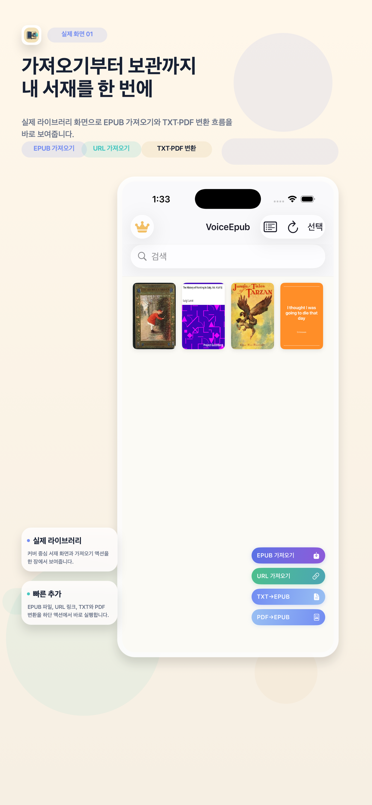
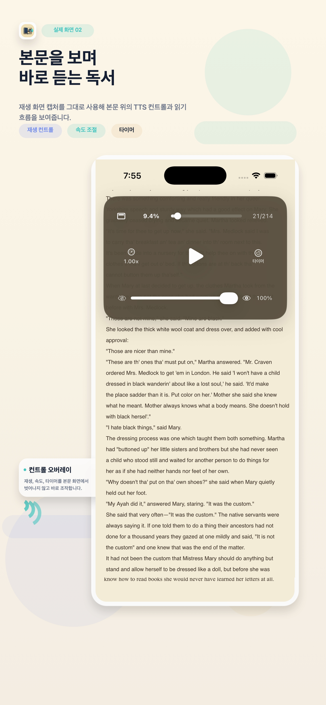
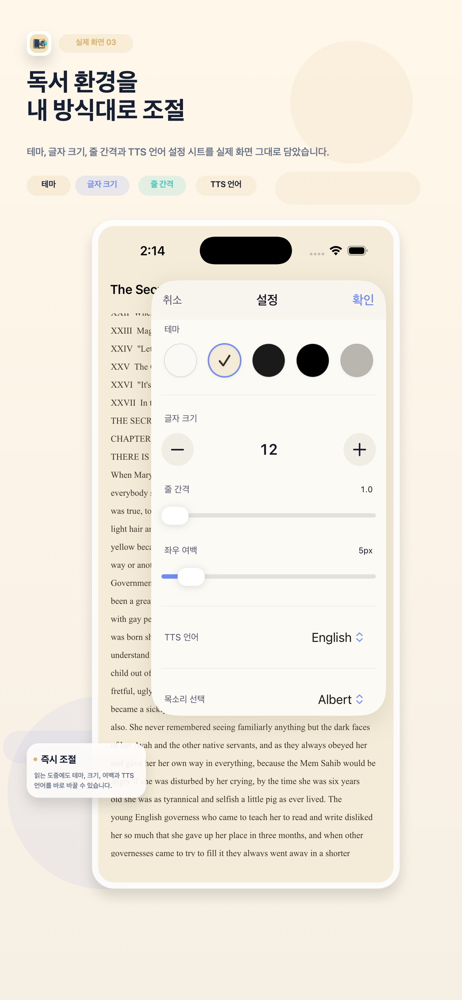

가져오기와 변환
EPUB 파일을 바로 가져오고, HTTPS 직접 EPUB 링크도 추가할 수 있습니다. TXT와 텍스트 기반 PDF는 EPUB으로 변환해 같은 서재에서 관리합니다.
EPUB 가져오기
URL 가져오기
TXT·PDF 변환
아래에서 가져오기와 변환, 몰입형 리더, 듣는 독서 기능을 한눈에 볼 수 있습니다.
EPUB 파일을 바로 가져오고, HTTPS 직접 EPUB 링크도 추가할 수 있습니다. TXT와 텍스트 기반 PDF는 EPUB으로 변환해 같은 서재에서 관리합니다.
본문 검색, 읽던 위치 복원, Light/Sepia/Dark/Black/eInk 테마, 글자 크기·줄 간격·좌우 여백 조절을 지원해 읽기 환경을 취향에 맞게 조절할 수 있습니다.
TTS 재생, 속도 조절, 수면 타이머를 지원하며 잠금 화면에서 백그라운드 듣기가 가능해 화면을 보지 못하는 순간에도 독서를 이어갈 수 있습니다.
서재, 듣는 독서, 읽기 설정 화면을 아래 이미지로 정리해 보여줍니다.

가져오기와 변환 액션을 한 화면에 모아 서재 관리 흐름을 단순하게 유지합니다.

읽는 화면을 벗어나지 않고 재생, 속도, 타이머를 바로 제어할 수 있습니다.

테마, 글자 크기, 줄 간격, TTS 언어를 읽는 도중 바로 조절할 수 있습니다.